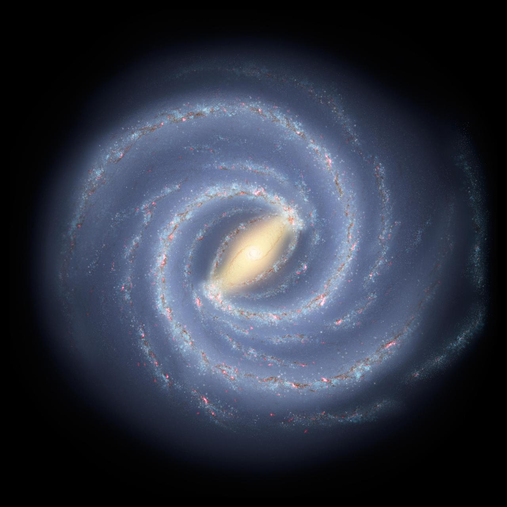

태양의 이웃 별(태양계)들
NEAREST STAR SYSTEMS

우리은하 속 태양의 이웃들. 가장 가까운 별과 그들이 거느린 또 다른 '태양계'를 만나봅니다.
밀키웨이(우리은하)는 약 1,000억~4,000억 개의 별이 모인 막대나선은하입니다. 태양은 그 수많은 별 중 하나일 뿐이며, 은하 중심에서 약 2만 6천 광년 떨어진 '오리온 팔'에 자리합니다.
태양계 주변에도 수많은 '이웃 태양계'가 있습니다. 가장 가까운 별은 4.24광년 거리의 프록시마 센타우리이고, 그 주위에는 이미 지구형 행성이 발견됐습니다. 빛으로도 수 년이 걸리는 거리지만, 지름 약 10만 광년인 우리은하에 비하면 바로 옆집이나 다름없습니다.
이 페이지에서는 우리 태양계가 아니라, 우리은하 안에서 태양과 이웃한 가까운 별(태양계)들을 소개합니다. 작고 붉은 적색왜성부터 태양의 쌍둥이별, 지구 크기 행성 7개를 거느린 별까지 — 밤하늘 너머의 이웃들을 만나보세요.